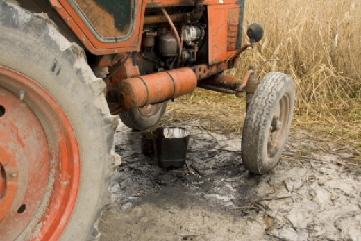

A környezettudatosság egyéni hozzáállás kérdése. A képen sérült olajteknőjű traktorból kifolyó olaj szennyezi a tóvidéket.

Olajfolyással szennyező traktor egy tó gátján
(Fotó: Orbán Zoltán).
A múlt század ’60-’70-es éveiben lettek világszerte ismertek az olyan „civil” kutatók, mint Jacques Cousteau vagy Gerald Durrel, akik a médián keresztül, filmjeik, könyveik és személyiségük erejével, világméretű társadalmi bázissal a hátuk mögött további nyomást gyakoroltak a politikusokra. Végül az 1972-es, az „Emberi Környezetért” stockholmi ENSZ konferencia a természet- és környezetvédelem ügyét világpolitikai kérdéssé tette.
A környezeti nevelés remélt, „megváltó” hatásának elmaradása (életvitelünk nem lett környezettudatosabb) arra ösztönözte a környezeti nevelés kutatóit és „frontharcosait”, hogy ennek okán újragondolják az ember és környezete viszonyának alakítására vonatkozó elképzeléseiket. A ’90-es évek végén ennek a világméretű együttgondolkodásnak az eredményeként, a környezeti nevelés eszmerendszerének rendszerszemléletűbb továbbgondolásaként született meg a fenntarthatóságra nevelés gondolata.
A fenntarthatóság-pedagógia annyiban több a környezeti nevelésnél, hogy az ember és környezete közti kapcsolatot nem szűkíti le a természeti környezethez való érzelmi viszonyulás alakítására, hanem ezt a gazdaság, a politika, a technikai lehetőségek, a jog, az egyenjogúság, a jólét, a társadalmi együttműködés, a munkabiztonság, az élethosszig való tanulás, az analfabetizmus felszámolása, az iskoláztatás globális kérdéskörének rendszerében mintegy részfeladatként kezeli. Ez a felfogás a környezeti nevelés által hangoztatott biológiai és ökológiai rendszerszemléletet mintegy átemeli a gyakorlatba, hangsúlyozva azt, hogy a globális és helyi problémák csak társadalomökológiai alapon oldhatók meg.
A helyes élőhelyhasználat és gazdálkodás jelenti a középutat a táj, a
benne élő emberek és más élőlények fennmaradásához
(Fotó: Simay
Gábor).
A gyakorlat nyelvére lefordítva, a veszélyeztetett fajok megmentésében a nemzeti parkok és a természetvédelmi őrök mellett legalább akkora szerepe van az adott ország gazdasági viszonyainak, gazdaság-, foglalkoztatás- és oktatáspolitikájának is. A parlagi sast, a szikes pusztát vagy a fecskéket nem a terepen lehet és kell csak megóvni, hanem az emberek gondolkodás- és viselkedésmódjának megváltoztatásával. Ezáltal, ez az első pillantásra természetvédelmi, konzervációbiológiai kérdés legalább ilyen mértékig tartozik az oktatásügyi, a belügyi, a népjóléti, egészségügyi, gyermek- és ifjúságvédelmi tárcákhoz, mint pusztán a környezetvédelmi minisztériumhoz.
A fenntartható fejlődés napjainkra az egyik legjelentősebb, immáron globálissá vált kérdés, mellyel nemzetközi szervezetek, egyezmények, irányelvek és kutatások foglalkoznak (OECD 1997, 1998, Tbiliszi Nyilatkozat 2000, Föld Charta 2003, UNESCO 2003). A fenntarthatóság egyik központi eleme a rendszerszemléletű tudás megszerzése, mely a fenntarthatóság pedagógiai vonatkozásainak elsődleges fontosságát jelzi.
A környezeti nevelés a fenntarthatóság gondolatának megjelenésével nem vesztette el jelentőségét, sőt, bizonyos értelemben még növekedett is a fontossága. A természetökológiából vett „zászlóshajó-faj” fogalmi párhuzamával élve, a környezeti nevelés lehet a mindennemű környezet iránt tudatos szemléletformálás, a fenntarthatóság pedagógiai vonatkozásainak zászlóshajója. A természetszeretet lehet ugyanis az az alap, melyre építve az egyén már gyermekkorától rávezethető (szocializálható, nevelhető, tanítható) a természeti és társadalmi környezetre történő odafigyelésre.
A fenntartható jövő legfontosabb letéteményese az „új polgár”, aki egyre kevéssé puszta elszenvedője, végrehajtója a politikai akaratnak, helyette mindinkább partnere, közvetlenebb alakítója, résztvevője a döntéseknek és az ezt követő cselekvésnek. Ez a szemlélet a modern neveléselméletekben és a környezetpszichológiában egyaránt jelentkezik. Ennek az új polgárnak naprakészebb, társadalmilag és egyénileg egyaránt hasznosabb ismeretekre, jártasságokra és készségekre van szüksége. Ez a tudás csak egy átalakuló, korszerűsödő nevelési-oktatási rendszerben szerezhető meg, melynek részét kell képeznie a környezeti nevelést is tartalmazó tanulásnak a fenntarthatóságért.